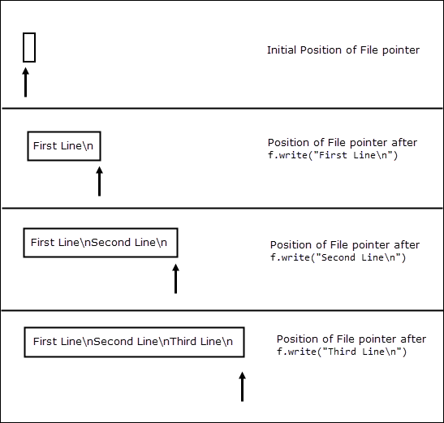
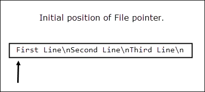
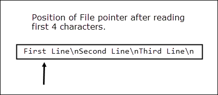
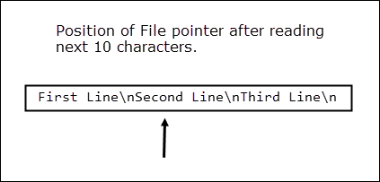
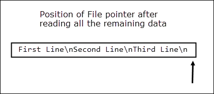
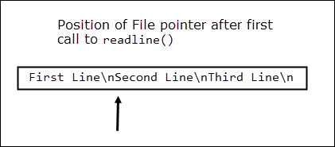
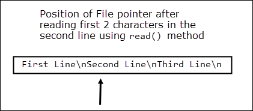
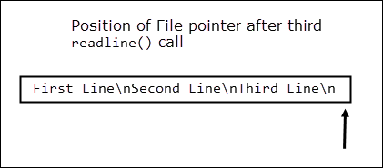

File Handling in Python
Last updated on July 27, 2020
So far in this course, we have been using variables to store data. The problem with this approach is that as soon as program ends our data is lost. One way to store the data permanently is to put it in a file. This chapter discusses how we can store data in the file as well as read data from the file.
In Python, File Handling consists of following three steps:
- Open the file.
- Process file i.e perform read or write operation.
- Close the file.
Types of File #
There are two types of files:
- Text Files
- Binary Files
A file whose contents can be viewed using a text editor is called a text file. A text file is simply a sequence of ASCII or Unicode characters. Python programs, HTML source code are some of the example of text files.
A binary file stores the data in the same way as as stored in the memory. The mp3 files, image files, word documents are some of the examples of binary files. You can't read a binary file using a text editor.
In this lesson we will discuss how to work with both types of files.
Let's start.
Opening a File #
Before you perform any operation on a file, you must the open it. Python provides a function called fopen() to open a file. It's syntax is:
fileobject = open(filename, mode)
The filename is the name or path of the file.
The mode is a string which specifies the type operation you want to perform on the file (i.e read, write, append, etc).The following table lists different modes available to you.
| Mode | Description |
|---|---|
"r" |
Opens the file for reading. If the file doesn't already exists you will get FileNotFoundError error. |
"w" |
Opens the file for writing. In this mode, if file specified doesn't exists, it will be created. If the file exists, then it's data is destroyed. |
"a" |
Opens the file in append mode. If the file doesn't exists this mode will create the file. If the file already exists then it appends new data to the end of the file rather than destroying data as "w" mode does. |
We can also specify the type of file (i.e text file or binary file.) we want to work with in mode string by appending 't' for text files and 'b' for binary files. But since text mode is default mode, it is generally omitted while opening files in text mode.
On success, open() returns a file object which is associated with the filename specified while calling it.
Here are some examples of how to open a file:
Example 1:
f = open("employees.txt", "rt")
This statement opens the text file employees.txt for reading. Since text mode is default, the above statement can also be written as:
f = open("employees.txt", "r")
Example 2:
f = open("teams.txt", "w")
This statement opens the text file in write mode.
Example 3:
f = open("teams.dat", "wb")
This statement opens the binary file in write mode.
Example 4:
f = open("teams.dat", "ab")
This statement opens the binary file in append mode.
Instead of using relative file paths we can also use absolute file paths. For example:
f = open("/home/tom/documents/README.md", "w")
This statements opens the text file README.md that is in /home/tom/documents/ directory in write mode.
In Windows, remember to escape backslashes while using absolute path names, Otherwise, you will get an error. For example:
f = open("C:\\Users\\tom\\documents\\README.md", "w")
We can also use something called "raw string" by specifying r character in front of the string as follows:
f = open(r"C:\Users\tom\documents\README.md", "w")
The r character causes the Python to treat every character in string as literal characters.
Closing the File #
Once we are done working with the file or we want to open the file in some other mode, we should close the file using close() method of the file object as follows:
f.close()
Closing a file releases valuable system resources. In case you forgot to close the file, Python will automatically close the file when program ends or file object is no longer referenced in the program. However, if your program is large and you are reading or writing multiple files that can take significant amount of resource on the system. If you keep opening new files carelessly, you could run out of resources. So be a good programmer and close the file as soon as you are done with it.
TextIOWrapper class #
The file object returned by open() function is an object of type _io.TextIOWrapper. The class _io.TextIOWrapper provides methods and attributes which helps us to read or write data to and from the file. The following table lists some commonly used methods of _io.TextIOWrapper class.
| Method | Description |
|---|---|
read([num]) |
Reads the specified number of characters from the file and returns them as string. If num is omitted then it reads the entire file. |
readline() |
Reads a single line and returns it as a string. |
readlines() |
Reads the content of a file line by line and returns them as a list of strings. |
write(str) |
Writes the string argument to the file and returns the number of characters written to the file. |
seek(offset, origin) |
Moves the file pointer to the given offset from the origin. |
tell() |
Returns the current position of the file pointer. |
close() |
Closes the file |
Writing Data to the Text File #
The following program demonstrates how to write data to the the file:
python101/Chapter-18/writing_to_file.py
1 2 3 4 5 6 7 | f = open("readme.md", "w")
f.write("First Line\n")
f.write("Second Line\n")
f.write("Third Line\n")
f.close()
|
In line 1, we are using open() method to open the text file in write mode. If the readme.md file doesn't exists, the open() method will create the file. If the file already exists, then it's data will be overwritten. Run the program and then open readme.md file. It should look like this:
python101/Chapter-18/readme.md
1 2 3 | First Line
Second Line
Third Line
|
Let's take a close look at how write() method writes data to the file.
All read and write operations in a file begins at file pointer. What is file pointer ? A file pointer is simply a marker which keeps track of the number of bytes read or written in a file. This pointer automatically moves after every read or write operation.
When a file is opened the file pointer points at the beginning of the file. The write() function begins writing at the current file position and then increments the file pointer. For example, the following figure shows the position of file pointer after each write operation.

Note that unlike print() function, write() method do not print newline character (\n) at the end of string automatically. We can also use print() function to write data to the file. Let's take a closer look at the signature of the print() using the help() function.
1 2 3 4 5 6 7 8 9 10 11 12 13 14 15 | >>>
>>> help(print)
Help on built-in function print in module builtins:
print(...)
print(value, ..., sep=' ', end='\n', file=sys.stdout, flush=False)
Prints the values to a stream, or to sys.stdout by default.
Optional keyword arguments:
file: a file-like object (stream); defaults to the current sys.stdout.
sep: string inserted between values, default a space.
end: string appended after the last value, default a newline.
flush: whether to forcibly flush the stream.
>>>
|
Notice the fourth parameter in the function signature i.e file. By default, file points to the standard output means it will print data to the screen. To output data to a file just specify the file object. The following program uses print() function instead of write() to write data to the file.
python101/Chapter-18/writing_data_using_print_function.py
1 2 3 4 5 6 7 | f = open("readme.md", "w")
print("First Line", file=f)
print("Second Line", file=f)
print("Third Line", file=f)
f.close()
|
This program produces the same output as before, the only difference is that, in this case the newline character (\n) is automatically added by the print() function.
Reading Data from a Text file #
To read a file you must open it in "r" mode. In addition to that, you should also ensure that the file you want to read already exists because in "r" mode the open() function throws FileNotFoundError error if its unable to find a file.
To test whether a file exists or not, we can use isfile() function from the os.path module. The syntax of isfile() is:
isfile(path)
If file found at the given path isfile() returns True. Otherwise False. The following shell session demonstrates working of isfile() function.
1 2 3 4 5 6 7 8 9 | >>>
>>> import os
>>>
>>> os.path.isfile("/home/q/python101/Chapter-18/readme.md") # file exists
True
>>>
>>> os.path.isfile("/home/q/python101/Chapter-18/index.html") # file doesn't exists
False
>>>
|
The following programs demonstrates how to read a file using read(), readline() and readlines() function.
Example 1: Reading data at once using the read() method.
python101/Chapter-18/read_method_demo.py
1 2 3 4 5 | f = open("readme.md", "r")
print(f.read()) # read all content at once
f.close()
|
Output:
1 2 3 | First Line
Second Line
Third Line
|
Example 2: Reading data in chunks using the read() method.
python101/Chapter-18/reading_in_chunks.py
1 2 3 4 5 6 7 | f = open("readme.md", "r")
print("First chunk:", f.read(4), end="\n\n") # read the first 4 characters
print("Second chunk:", f.read(10), end="\n\n") # read the next 10 character
print("Third chunk:", f.read(), end="\n\n") # read the remaining characters
f.close()
|
Output:
1 2 3 4 5 6 7 | First chunk: Firs
Second chunk: t Line
Sec
Third chunk: ond Line
Third Line
|
When the file is open in read mode the file pointer points at the beginning of the file.

After reading first 4 characters, file pointer is at t.

After reading the next 10 characters, file pointer is at character o.

The third call to read() reads the remaining characters in the file and returns them as a string. At this point, the file position pointer points at the end of the file. Consequently, any subsequent calls to read() method returns an empty string.

Example 3: Using readline() to read data from a file.
python101/Chapter-18/readline_method_demo.py
1 2 3 4 5 6 7 8 9 10 11 12 13 14 15 16 17 18 | f = open("readme.md", "r")
# read first line
print("Ist line:", f.readline())
# read the fist two characters in the second line
print("The first two characters in the 2nd line:", f.read(2), end="\n\n")
# read the remaining characters int the second line
print("Remaining characters in the 2nd line:", f.readline())
# read the next line
print("3rd line:", f.readline())
# end of the file reached, so readline returns an empty string ""
print("After end of file :", f.readline())
f.close()
|
Output:
1 2 3 4 5 6 7 8 9 | Ist line: First Line
The first two characters in the 2nd line: Se
Remaining characters in the 2nd line: cond Line
3rd line: Third Line
After end of file :
|
As usual when file is opened, the file pointer points at the beginning of the file.
The first call to readline() method moves the file pointer to the start of next line.

The read() function then reads two characters from the file which moves the file pointer to the character c.

In line 10, the readline() is called again but this time it starts reading from the character c to the end of the line (including the newline character).
In line 13, readline() is called again, to read the last line. At this point, file position pointer is at the end of the file. That's why readline() call in line 16 returns an empty string ("").

Example 4: Using readlines() to read data from a file.
python101/Chapter-18/readlines_method_demo.py
1 2 3 4 5 6 | f = open("readme.md", "r")
# read all the line as return and them as a list of strings
print(f.readlines())
f.close()
|
Output:
['First Line\n', 'Second Line\n', 'Third Line\n']
Reading Large Files #
The read() and readlines() methods work great with small files. But what if your file has thousands or millions of lines in it? In such cases using read() or readlines() may result in memory hogs. A better approach would be to use loops and read file data in small chunks. For example:
python101/Chapter-18/reading_large_file_demo1.py
1 2 3 4 5 6 7 8 9 10 11 12 13 14 15 16 | f = open("readme.md", "r")
chunk = 10 # specify chunk size
data = ""
# keep looping until there is data in the file
while True:
data = f.read(chunk)
print(data, end="")
# if end of file is reached, break out of the while loop
if data == "":
break
f.close()
|
Output:
1 2 3 | First Line
Second Line
Third Line
|
Here we are using an infinite loop to iterate over the contents of the file. As soon as the end of file is reached, the read() method returns an empty string (""), if condition in line 12, evaluates to true and break statement causes the loop to terminate.
Python also allows us to use for loop to loop through the file data using file object as follows:
python101/Chapter-18/reading_large_files_using_for_loop.py
1 2 3 4 5 6 | f = open("readme.md", "r")
for line in f:
print(line, end="")
f.close()
|
Output:
1 2 3 | First Line
Second Line
Third Line
|
Appending Data to the Text File #
We can use "a" mode to append data to end of the file. The following program demonstrates how to append data to the end of the file.
python101/Chapter-18/append_data.py
1 2 3 4 5 6 7 8 9 10 11 12 13 14 15 16 17 18 19 | f = open("readme.md", "a")
print("Appending data to the end of the file ...")
f.write("Fourth Line\n")
f.write("Fifth Line\n")
print("Done!")
f.close()
## open the file again
print("\nOpening the file again to read the data ...\n")
f = open("readme.md", "r")
for line in f:
print(line, end="")
f.close()
|
Output:
1 2 3 4 5 6 7 8 9 10 | Appending data to the end of the file ...
Done!
Opening the file again to read the data ...
First Line
Second Line
Third Line
Fourth Line
Fifth Line
|
Working with files using the with statement #
Python also provides a nice shortcut for file handling using the with statement. The following is the general form of the with statement when used with files.
1 2 3 | with open(filename, mode) as file_object:
# body of with statement
# perform the file operations here
|
The best thing about this shortcut is that it automatically closes the file without requiring any work on your part. The statements inside the body of the with statement must be equally indented otherwise you will get an error. The scope of file_object variable is only limited to the body of the with statement. If you try to call read() or write() method on it outside the block you will get an error.
The following examples show how we can use the with statement to read and write data to and from the file.
Example 1: Reading data line by line using for loop.
python101/Chapter-18/with_statement.py
1 2 3 | with open("readme.md", "r") as f:
for line in f:
print(line, end="")
|
Output:
1 2 3 4 5 | First Line
Second Line
Third Line
Fourth Line
Fifth Line
|
Example 2: Reading all data at once using read() method.
python101/Chapter-18/with_statement2.py
1 2 | with open("readme.md", "r") as f:
print(f.read())
|
Output:
1 2 3 4 5 | First Line
Second Line
Third Line
Fourth Line
Fifth Line
|
Example 3: Reading a large file in small chunks.
python101/Chapter-18/with_statement3.py
1 2 3 4 5 6 7 8 9 10 11 12 | with open("readme.md", "r") as f:
chunk = 10 # specify chunk size
data = ""
# keep looping until there is data in the file
while True:
data = f.read(chunk)
print(data, end="")
# if end of file is reached, break out of the while loop
if data == "":
break
|
Output:
1 2 3 4 5 | First Line
Second Line
Third Line
Fourth Line
Fifth Line
|
Example 4: Writing data to a file using the write() method
python101/Chapter-18/with_statement4.py
1 2 3 4 5 | with open("random.txt", "w") as f:
f.write("ONE D\n")
f.write("TWO D\n")
f.write("THREE D\n")
f.write("FOUR D\n")
|
Reading and Writing Binary Data #
The following program copies binary data from a source file (source.jpg) to a target file (dest.jpg).
python101/Chapter-18/reading_and_writing_binary_data.py
1 2 3 4 5 6 7 8 9 10 11 12 13 | f_source = open("source.jpg", "rb")
f_dest = open("dest.jpg", "wb")
char_count = 0
for line in f_source:
char_count += len(line)
f_dest.write(line)
print(char_count, "characters copied successfully")
f_source.close()
f_dest.close()
|
Output:
2115658 characters copied successfully
Run the program and it should create dest.jpg file in the same directory as source.jpg.
Load Comments